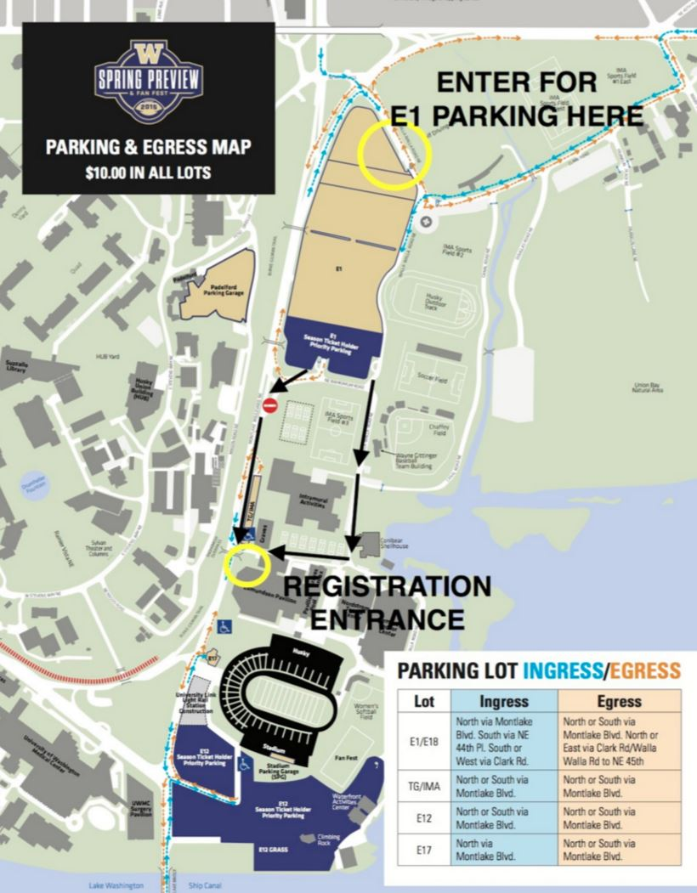

About
The Spring "Game" is the final practice session for the football team's spring practices. They will be running drills and scrimmages as we perform our favorite songs from the stands. As there is no field show for this performance, HMB members have fun putting the extra effort into choreography and providing a great atmosphere for the fans. It is free and open to the public, so your parents are welcome to attend and watch you play!
Parking
Please park in the E1 parking lot, see map below. Parking will be provided for cars with two or more participants carpooling together—make sure you ask for parking on the registration form. Parking for single-drivers will be $10 and can be paid at the entrance to parking lot E1.
Instrument Check-Out
Please do your best to bring your own instrument or borrow one from your school. If that is not an option for you, we can provide the following instruments on a first come-first served basis. Make sure you let us know when you register that you’ll need one.
- Piccolo
- Mellophone
- Baritone
- Sousaphone
- Snare
- Bass
- Quints